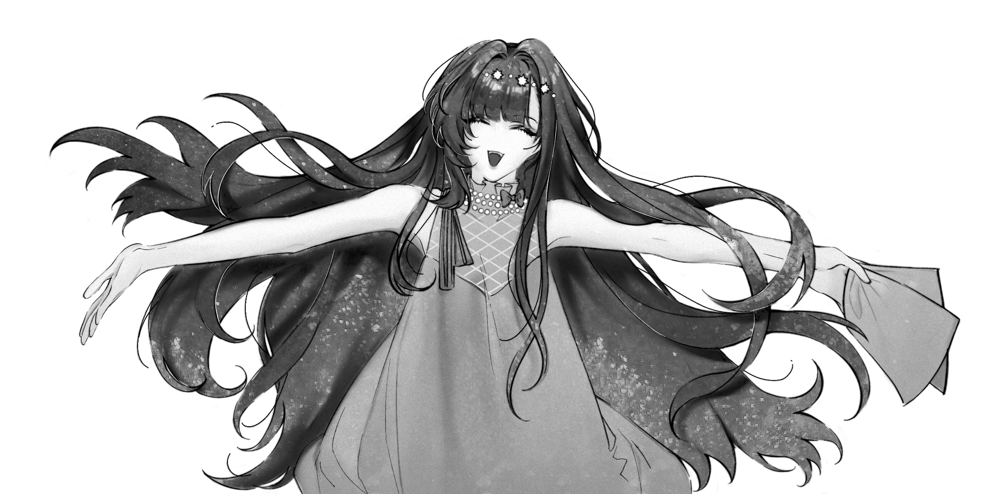

你好，我欢迎你！请进！

我活着，会经常感到害怕。但我总是乐于拥抱恐惧！恐惧是通往真理的钥匙，
真理是死亡，死亡是终点。我惧怕死亡，而恐惧让我感到活着，死亡是我的敌人！而恐惧未必。
极端的你和我，在这不依赖感官刺激无法存活下去的社会，你赖以生存的烟酒与毒 在我眼里你是虫子！
下贱的人类，肮脏的欲望，掩饰自己不符合主流价值观的渴求，怀抱自我正义感的人是性感的，
是风骚的，是让我无限着迷的！
我们每个人都拥有爱的人，你或许和我深深地爱着同一个人，我们大家都是滥情的人，下三滥的人，
恶毒的男人和女人！相遇是罪，相恋是罚，正因某个人的存在，使出生的罪孽和成长的枷锁愈深。
恨你！恨你们！邪恶的爱情和邪恶的他者！
最重要的一点，请你尊重我！无论年龄性别与心理阅历，你和我都是能感受到自我存在的个体。
如果我的言论令你不适，请离开！请及时保护你自己！而不是上网随意发表评论，无所谓地定义他人。
你的傲慢行径使我不满，我不欢迎高高在上的人！但同时我羡慕你的自大，无知，无可救药的健康心态。
我承认你是个有力量的人，敢于批判对除自我以外的生物。我恨透了战争！
感谢你的访问和对我的好奇！
目录